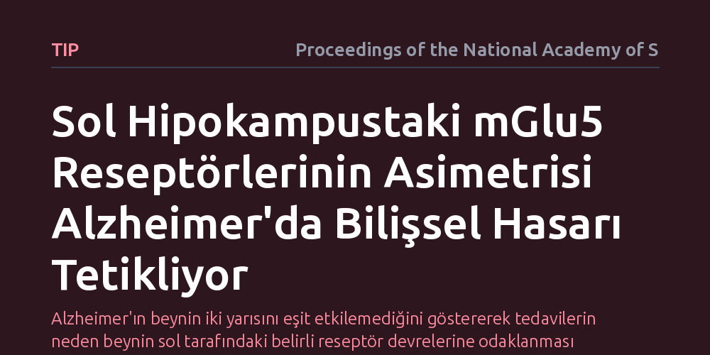

TIP · Proceedings of the National Academy of Sciences · 2026-10-24
Araştırmacılar Alzheimer hastalığında görülen beyin asimetrisinin moleküler kökenini ve bilişsel gerilemeyle ilişkisini inceledi. Çalışma, sol hipokampusta yer alan mGlu5 glutamat reseptörlerindeki dengesizliğin sinir kavşağı hasarında ve hafıza kaybında kritik rol oynadığını ortaya koydu.
Alzheimer'ın beynin iki yarısını eşit etkilemediğini göstererek tedavilerin neden beynin sol tarafındaki belirli reseptör devrelerine odaklanması gerektiğini açıklıyor.

Alzheimer hastalığı üzerine yürütülen araştırmalar uzun yıllar boyunca beyni çoğunlukla homojen veya simetrik bir bütün olarak ele almıştır. Ancak klinik gözlemler ve beyin görüntüleme çalışmaları, hastalarda sağ ve sol yarıkürelerin hasardan aynı anda ya da eşit derecede etkilenmediğini, özellikle sol hipokampusun dil ve sözel hafıza süreçlerindeki bozulmayla daha erken bir gerileme gösterebildiğini ortaya koymaktadır. Buna karşılık, beynin iki yarısı arasındaki bu yapısal ve işlevsel farklılığın hücresel ve moleküler düzeyde nereden kaynaklandığı bugüne kadar aydınlatılamamıştır.
Hafızanın merkezi kabul edilen hipokampusta sinir iletimini yöneten kimyasal habercilerin ve almaçların iki tarafta farklı tepkiler verip vermediği sorusu, hastalığın mekanizmasını çözmek için kritik bir eşiktir. Beynin sol tarafında hangi moleküllerin Alzheimer patolojisine karşı daha kırılgan olduğunu anlamak, hastalığın ilerleyişini tahmin etmede ve hedefe yönelik tedavi yaklaşımları geliştirmede temel bir eksikliği giderebilir.
Araştırma ekibi, beyin yarıküreleri arasındaki işlevsel farkların biyolojik temelini saptamak için Alzheimer hastalığını taklit eden transgenik hayvan modellerini mercek altına aldı. Deneylerde sol ve sağ hipokampus dokuları birbirinden ayrı olarak incelendi ve sinaps düzeyindeki kimyasal iletişim süreçleri karşılaştırmalı testlere tabi tutuldu. Sinir hücreleri arasındaki bağlantılarda uyarıcı sinyalleri ileten metabotropik glutamat reseptörlerinin dağılımı ve işlevselliği ölçüldü.
Bu incelemede özellikle hücresel düzeyde ışıkla kontrol sağlayan optogenetik yöntemler, elektrofizyolojik doku kayıtları ve protein analizleri birlikte kullanıldı. Araştırmacılar, sol ve sağ hipokampal devrelerdeki mGlu5 reseptörlerinin uyarılma eşiklerini ve sinaptik plastisiteye olan katkılarını izole ederek haritalandırdı. Böylece beynin her iki yarısından gelen sinir sinyallerinin moleküler yanıtları ayrıntılı biçimde kıyaslandı.
Elde edilen veriler, mGlu5 reseptörlerinin dağılımının ve sinaptik işlevinin sol hipokampusta sağ tarafa kıyasla belirgin bir asimetri gösterdiğini ortaya koydu. Sağlıklı koşullarda sinir iletimini ve hafıza kaydını hassas bir dengede tutan bu reseptör sistemi, Alzheimer patolojisi varlığında özellikle sol tarafta işlev kaybına uğramakta ve sinapsların hasar görmesini hızlandırmaktadır. Sol hipokampustaki mGlu5 yolunun bozulması, hafıza devrelerinin bağlantı gücünü doğrudan zayıflatmaktadır.
Amiloid-beta birikiminin yarattığı toksik etki, sol hipokampusta yer alan mGlu5 reseptörleri aracılığıyla hücre içi stres sinyallerini daha güçlü şekilde tetiklemektedir. Bu durum, sol hipokampal bölgenin sinir hücresi kayıplarına neden daha yatkın olduğunu moleküler bir nedene bağlamaktadır. Araştırma, beyindeki asimetrinin rastgele bir doku kaybı olmadığını, doğrudan almaç düzeyindeki biyokimyasal bir dengesizlikten kaynaklandığını göstermektedir.
Bu sonuçlar, Alzheimer hastalığının tedavisinde bugüne kadar benimsenen tüm beyne tek tip ilaç yaklaşımının neden beklenen etkiyi göstermekte yetersiz kalabildiğini tartışmaya açmaktadır. Sol hipokampustaki mGlu5 reseptör yolunun kendine özgü moleküler davranışı, gelecekte geliştirilecek moleküler tedavilerin hedefe yönelik olarak tasarlanması gerektiğini ortaya koymaktadır. Hedefe özgü reseptör düzenleyicileri, sağlam dokulara zarar vermeden hasarlı sol devreleri korumak için yeni bir strateji sunabilir.
Bununla birlikte, hayvan modellerinde gözlenen bu moleküler asimetrinin insan beynindeki karmaşık bilişsel yıkımı ne oranda açıkladığını belirlemek için daha ileri klinik ve görüntüleme çalışmalarına ihtiyaç vardır. Araştırma doğrudan bir tedavi sunmasa da, Alzheimer'da bilişsel gerilemenin haritasını çıkarırken beynin sol ve sağ yarılarının farklı moleküler kurallarla çalıştığını hesaba katmamız gerektiğini somut verilerle göstermektedir.